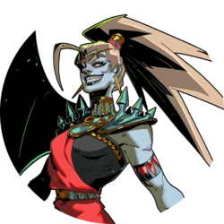
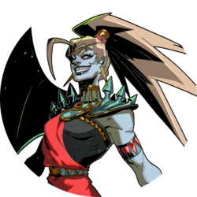
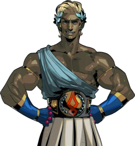
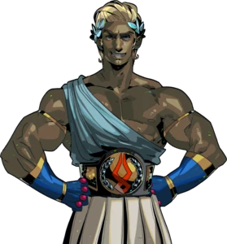

"El juego comienza con nuestro protagonista. Zagreus el cual se entera de que fue engañado toda su vida por su padre Hades sobre la muerte de su madre Persefone, una vez Zagreus se entera de esto emprende su camino para salir del inframundo y encontrar a su madre pero Hades... un dios terco no se lo dejara facil"
Hades es un roguelite en el que las mazmorras se generan aleatoriamente y en el que cada vez que morimos volvemos derechos al punto de partida.
título saca mucho partido de todo lo que hace. Siempre sabe dar una buena vuelta de tuerca para sorprender a los veteranos del género.
Sin embargo, la narración que hace Hades de su historia llama la atención, no tanto por lo argumental,
donde no termina de ser la mejor, pero sí por cómo lo hace. Cada vez que nuestro protagonista llamado Zagreo regresa de la muerte desbloquea
nuevas líneas de diálogo con aquellos que le rodean. Al principio ni siquiera se da una explicación de por qué quieres escapar del Tártaro y
puedes pasar unas cuantas horas de juego sin que conozcas la verdad. Probablemente, sea este el lugar en el que reside su éxito, porque la narrativa
de Hades no se basa únicamente en ir pelando una cebolla por capas que otorga al jugador nuevos datos cada vez que vuelve a la vida. El programa no es ajeno a tus acciones.
Los jefes aprenden de tu estilo de juego y cuando ya has pasado varias veces por un mismo lugar se establecen sutiles cambios que responden a su vez a una justificación argumental. No es sencillo contar con una narrativa elaborada en un roguelite, al menos no con una que se justifique a sí misma de una manera tan sólida. Este buen trabajo argumental se cimienta en una jugabilidad en la que tienes que adaptarte lo mejor que puedas a las herramientas que te presta el juego.
El título cuenta con un buen repertorio de armas que se ven aumentadas conforme llegas más lejos en tu huida. A elegir entre un total de 6 herramientas diferentes, este punto es uno de los pocos donde el jugador tiene estricto poder de decisión. Antes de escapar de sus aposentos, Zagreo tiene la posibilidad de seleccionar con qué arma hacer frente a la aventura. Lo realmente jugoso es que, a pesar de que puedas llegar a acomodarte con alguna de ellas, el juego te incentiva a seleccionar una distinta en cada pasada ofreciendo de forma aleatoria un 20% más de obtención de experiencia con alguna de ellas.


"...Stygius, la espada del inframundo, debe haber sido una de las mejores armas que jamás se haya empuñado"
"... Debe haber sido un espectáculo cuando Lord Hades empuñó a Varatha la Lanza Eterna contra los Titanes, haciendo retroceder a esos demonios a las profundidades, junto con la ayuda de sus hermanos y hermanas olímpicos..."
" ...Aegis, el Escudo del Caos, predecesor del mismo Aegis que esgrimían el Señor Zeus y Atenea, su hija más favorecida... el Señor del Trueno defendió a sus hermanos y hermanas usando ese mismo escudo y luego, juntos, conspiraron para hacer retroceder a los titanes a los confines más bajos del Inframundo... "
" ... Coronacht, el llamado Buscador de corazones, es sin duda el arco más fino jamás concebido, y blandido una vez nada menos que por la señora Hera, quien estuvo al lado de Zeus, en mejores términos en ese entonces, mientras hacían retroceder a los Titanes bajo una tormenta de flechas y truenos... "
" ... ¿Qué es un arma sino la extensión de la propia voluntad de sobrevivir, de destruir? Los antiguos maestros forjadores ciclópeos que crearon los Brazos Infernales de acuerdo con el diseño de los Destinos deben haber entendido esto cuando entregaron los singulares Puños Gemelos. de Malphon en secreto a los dioses... "
" ... La menos conocida entre los dioses que se unieron para derrocar a los titanes es Lady Hestia, diosa solitaria del hogar y antigua portadora de Exagryph, el Rail of Adamant; un artefacto de metal y llamas tan temible que los propios dioses lo abandonaron una vez que terminaron su malvado trabajo... "

Los corazones de centauro son artefactos que se encuentran en el inframundo y que aumentan la salud actual y máxima de Zagreus en 25
' ... Los centauros equinos son bien conocidos por su resistencia ilimitada, y aunque su reinado hace mucho que pasó del reino de los mortales arriba, su determinación sigue viva dentro del Inframundo. Aquí, su esencia vital está encerrada en recipientes que aún laten, que otorgan el poder de los centauros al portador. Aún no está claro si algún centauro sigue vivo para reclamar estos artefactos. '

Las llaves ctónicas son una de las varias monedas de artefacto que se pueden encontrar en el inframundo. Le permiten a Zagreus desbloquear opciones de actualización adicionales en el Espejo de la Noche , así como Armas Infernales adicionales.
' ... Ciertos artefactos dentro del reino de Hades han sido sellados bajo llave, para evitar la manipulación por parte de aquellos que aún no están preparados para aprovechar su poder inconmensurable. Esas llaves, o eso parece, no son tan fáciles de conseguir. Pero, hay maneras. Las llaves yacen esparcidas dentro del Tártaro, quizás más allá. Parecen como si estuvieran compuestos por las propias sombras, y se desintegran primero en polvo y luego en nada cuando se usan; tal vez ese polvo simplemente se reforma en otra clave, en alguna parte, en otro tiempo. '
La oscuridad es una de varias monedas de artefactos que se pueden encontrar en el inframundo. Se utiliza principalmente para mejorar el poder de Zagreus en el Espejo de la Noche .
' ... Nacido del Caos, el Inframundo es un dominio de pura y absoluta oscuridad. A veces, esta esencia oscura se manifiesta a través de toda la furia de los muertos y toda la lucha que puede desarrollarse debajo de la tierra. Y, hay aquellos nacidos de este reino que pueden absorber esa esencia, ganando unidad con el Inframundo, haciéndose más fuertes todo el tiempo. Esa oscuridad, habiendo arraigado en el interior, conecta al portador con el Inframundo, los hace inseparables. Casi uno y el mismo. Los nacidos de la oscuridad deben permanecer en la oscuridad; esta es una de las leyes indelebles del Inframundo. '

Charon's Obol es una de varias monedas de artefacto que se pueden ganar en el inframundo. Luego se pueden usar en la tienda de Caronte o en un Pozo de Caronte para comprar varios artículos. A diferencia de todas las demás monedas, Zagreus perderá todos sus Obols cuando muera.
' ... El inframundo es mejor conocido como el dominio de la muerte, pero también es el dominio de innumerables bienes y riquezas, enviados al río Styx junto con los difuntos. Aquí el propósito de tal moneda es principalmente simbólico; pero hay quienes lo valoran de una manera más tradicional, especialmente el barquero, Caronte . Su necesidad de dinero no puede entenderse completamente. Acumula la riqueza, tal vez para construir para sí mismo embarcaciones de carenado fluvial cada vez mejores. Los destinos solo saben qué más. '


 

 
